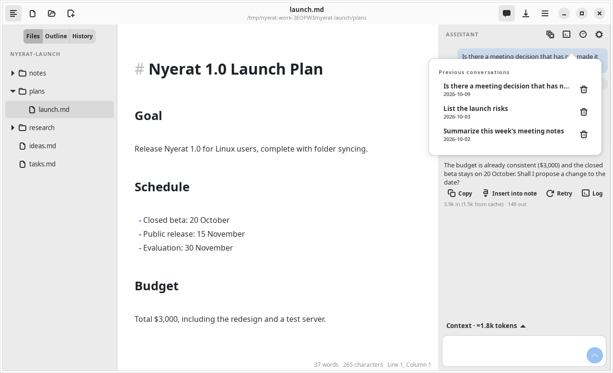
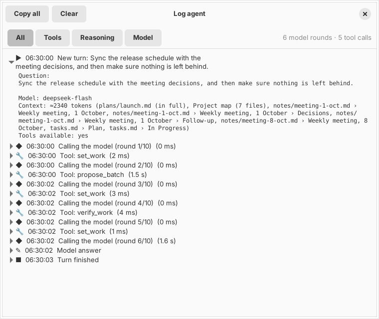

Agent
History, journal, and log
Your conversations and decisions are saved as Markdown in the work folder, and every step of the agent can be watched live.
Conversation history per folder
Every conversation is written as one Markdown file in <work folder>/.nyerat/chats/, e.g. 2026-10-04-is-there-a-meeting-decision-not-yet-in-the-plan.md. The file is updated after every turn and at action checkpoints.
- The clock button in the panel header opens the list of conversations in that folder, newest first. Click one to restore and continue it; its history is sent to the model too.
- The trash icon moves a conversation to the Trash. The broom icon starts a new conversation.
.nyerat/automatically gets a.gitignorecontaining*because it holds quotes from the manuscript. Delete that file if you want to commit the history.- The Save conversation history in the folder switch in the panel settings turns it off. Without an open folder, nothing is saved.

For a long conversation, the model receives the latest turns and a compact summary of the old turns. The full history stays on disk.
The action journal
The frontmatter of a conversation file stores work (the goal, steps, and verification) and actions (proposals, decisions, notes, and snapshots before and after). From it you can look at the diff of an old action again without applying it again, and Undo remains available.
Recovery
A proposal is recorded in the journal before it is reviewed, and its decision after it is applied. If the process is interrupted, for example the app is closed while the review window is open, Nyerat compares the journal with the real contents of the files when the conversation is opened again:
| File contents | Recognized as |
|---|---|
| Same as the result of the proposal | Already applied |
| Same as the old contents | Interrupted, not applied |
| A mixture | Failed, needs your check |
The work plan is restored too, together with the Resume work button. Unsaved editor changes still follow the editor's save rules.
The agent log
The terminal button in the panel header opens the Agent log window: a tree of every turn on the left and the details of the selected step on the right, updated live while the agent works.

- Model rounds: the number of messages, the tools offered, and the tokens in/cached/out
- The model's thinking process per round
- Every tool call with its JSON arguments, the result returned, the status, and the duration
- Errors and stops
Folding a round hides its steps. Selecting a step shows its metrics (duration, result size, share of the turn's time, tokens) and the tabs Summary, Arguments, Result, and Raw; the detail follows the newest step until you pick one yourself.
The filters All, Tools, Reasoning, and Model, plus the Copy all and Clear buttons. The log keeps at most 2,000 events and is not sent to the model. For the assistant it is saved next to the conversation (.nyerat/chats/<name>.log.jsonl) and comes back when you reopen that conversation; New conversation empties the view. The pi log only exists while the app runs. The same window is used for the pi log.